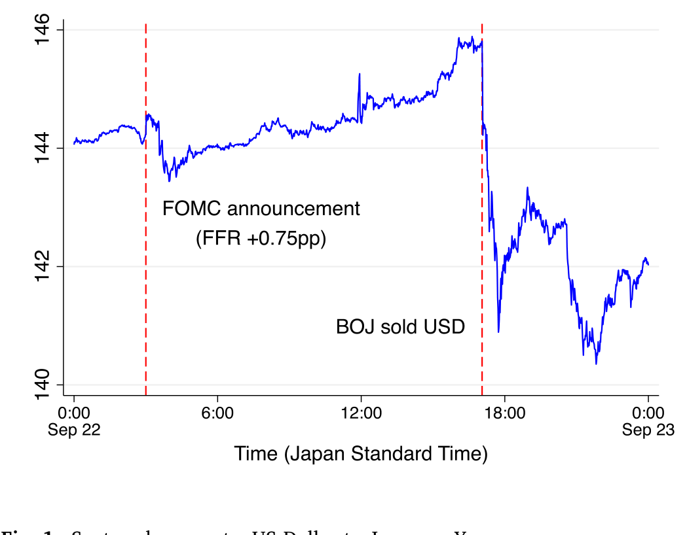
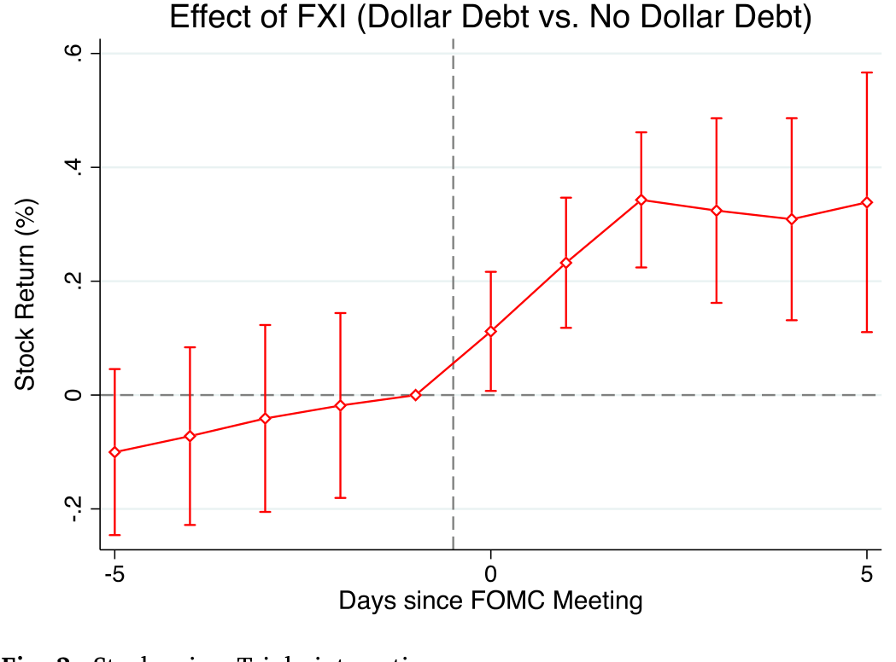
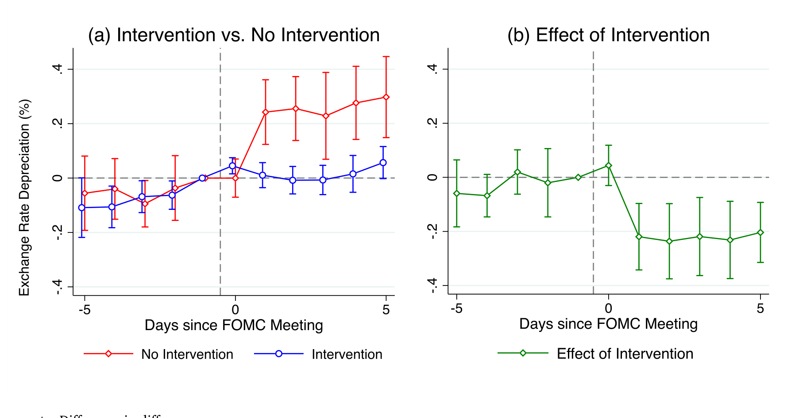
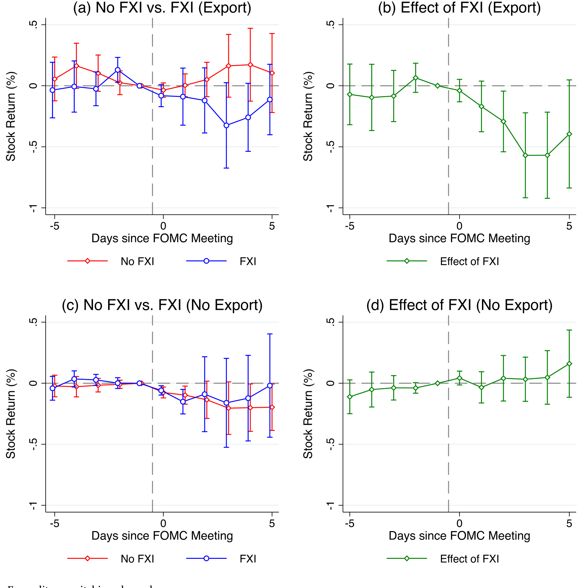
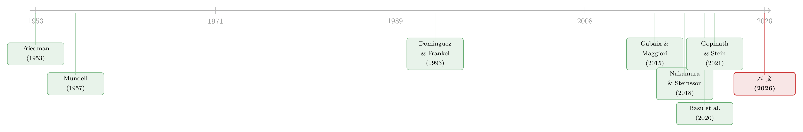

对着美联储「逆向操作」：外汇干预能挡住美国货币政策的外溢吗？
本文读的是 Rodnyansky, Timmer & Yago (2026, Journal of Financial Economics)：当美联储意外加息、本币承压时，新兴市场央行「卖美元、买本币」的外汇干预（即「对着美联储逆向操作」）能有效顶住汇率贬值、压住风险溢价与资本外流，并且精准地托住了那些借了美元债的公司的股价——也就是说，它掐断了汇率外溢的「资产负债表渠道」。代价是：本币没贬，出口商反而受了伤。
1 一个被「秒速逆转」的故事
先讲一个发生在 2022 年 9 月 22 日的真实片段。
前一天，美联储公开市场委员会（FOMC）宣布把联邦基金利率一口气抬高 0.75 个百分点。消息一出，日元应声大跌——美元兑日元的即期汇率几乎是直线往上冲。这是教科书里最标准的一幕：美国货币政策收紧，美元走强，全世界的货币、股市、信用一起承压，这正是 Rey (2015) 所说的「全球金融周期（Global Financial Cycle）」的威力。
但故事在这一天出现了一个戏剧性的转折。日本央行下场了：它在外汇市场上卖出美元、买入日元。结果呢？日元的贬值几乎是被「秒速逆转」的——汇率曲线掉头向下，把之前的跌幅吞了回去。

Figure 1: Spot exchange rate: US Dollar to Japanese Yen. the Fed unexpectedly tightens (loosens) policy. We call this policy
这个画面太有诱惑力了。它仿佛在说：面对美联储这台「全球金融周期」的发动机，小国并非只能束手就擒；它可以「对着美联储逆向操作（intervening against the Fed）」，把外溢冲击顶回去。
可是，一个看过太多「事后归因」的研究者，此刻应该立刻警觉起来：我们看到的，真的是干预的因果效应吗？还是说，日本央行恰好在汇率自己要反弹的那一刻出手，于是「抢了功劳」？更麻烦的是——美联储为什么加息、日本央行为什么干预，都不是随机的。两个内生的政策决定纠缠在一起，再叠加上无数同时影响汇率与股价的宏观噪音，想从这团乱麻里抽出「干预的净效应」，谈何容易。
这正是这篇论文要解决的核心难题，也是它最漂亮的地方。
2 老问题，老办法为什么不够
外汇干预（foreign exchange interventions, FXI）有没有用，是国际金融里争论了几十年的老问题。
理论这边其实早就给了肯定的答案。从 Gabaix and Maggiori (2015) 开始的一支「金融中介视角」的文献——经 Cavallino (2019)、Amador et al. (2020)、Fanelli and Straub (2021)、Maggiori (2022)、Itskhoki and Mukhin (2023) 一路发展——论证了一件事：当国际金融中介的风险承担能力有限、本币和外币债券市场被「部分分割」时，央行买卖外汇会改变中介的资产负债表构成，从而真的能撬动汇率，甚至改善福利。换句话说，在一个不满足无套利的世界里，干预不是徒劳。
但实证这边一直很憋屈。从 Dominguez and Frankel (1993) 那篇经典的「组合效应」研究，到 Adler et al. (2019)、Fratzscher et al. (2019, 2023) 等大样本面板，文献始终绕不开同一个幽灵：内生性。央行往往是在「坏消息」来临、本币正要贬值时才出手干预，于是干预与贬值天然地纠缠在一起。你观察到「干预之后汇率没怎么跌」，到底是干预管用，还是干预本来就挑在压力没那么大的时候做？
而且，这一大票文献有两个共同的盲区：第一，它们几乎都只看汇率，没人去看干预如何作用于股价的横截面；第二，没人把外汇干预和美国货币政策直接挂钩起来研究两者的交互。
这就是本文的切入口。
3 真正关键的一步：把比较「关进」一个国家、一个时点里
要理解这篇论文的识别策略，得先想清楚它到底在跟「谁」比。
它用的是一个高频的「多事件研究」框架，技术上是局部投影—双重差分 (local projection difference-in-differences, LP-DID)，沿用 Dube et al. (2025) 的做法，围绕每一次 FOMC 会议来估计。这里有几个环环相扣的设计，缺一不可。
首先，美国货币政策冲击必须是「干净」的。 作者用的是 Nakamura and Steinsson (2018) 那套高频货币政策冲击：只取 FOMC 公告前后 30 分钟窗口内联邦基金利率期货的变化。窗口这么窄，是为了让这个「货币意外」与公告时点上几乎所有其他信息正交——它捕捉的就是政策本身的惊吓成分，而不是基本面。
接着，一个自然的问题是：怎么定义「对着美联储逆向操作」？ 作者用了 13 个国家的每日外汇干预数据。所谓「逆向操作」，就是当美联储意外收紧（放松）时，央行卖出（买入）美元——卖美元、买本币，本意是给本币施加升值压力。具体地，如果央行在 FOMC 会议后 5 天内反向干预，就算它「对着美联储干了一仗」。
然后，真正关键的一步在于横截面。 这是全文的胜负手。作者把每日的公司层面股票收益率，和公司债务的币种构成信息拼在一起——也就是知道哪些公司借了美元债，哪些没有。于是，对同一次货币冲击，他们可以在同一个国家、同一个时点内部，比较「有美元债的公司」和「没有美元债的公司」股价反应的差异。
这一步为什么是「核武级」的？因为它把所有「国家层面、时点层面」的混杂因素全都差分掉了。无论这个国家此刻遭遇了什么宏观噩耗、央行收到了什么不可观测的私密信号、风险溢价和资本流动如何变化——只要这些力量对一国内所有公司是同向作用的，它们就会在「有美元债 vs 没美元债」的差分里被精确地抵消。剩下能解释这个差异的，几乎只剩一个东西：通过汇率→债务偿付这条链路起作用的资产负债表渠道（balance sheet channel）。
这种「把识别压进同一时点的横截面差异里」的思路，和公司金融里识别银行信贷渠道时「同一家公司、不同银行」的做法异曲同工。关于在国别异质性中剥离干扰、把因果钉在横截面上的做法，可参见《同样的加息，为什么德国的银行和西班牙的银行走向相反？》。
4 没人干预时，外溢长什么样
在看干预之前，得先看看「不干预」的世界里，美国货币政策的外溢究竟有多狠。
当美国货币政策意外收紧、而本国央行不反向干预时，作者发现了一组非常鲜明的图景：本币对美元贬值、货币风险溢价上升、投资者从该国撤回组合资金、股价下跌。而股价的下跌是高度不均匀的。
量化地说：一次 10 个基点的联邦基金利率意外上行，会让有美元债的公司股价在 FOMC 当天就下跌约 3%，并在随后三天内累积到将近 10%。相比之下，没有美元债的公司，股价跌幅不到 1%。

Figure 3: Stock price: Triple interaction
这个对比有多刺眼，结论就有多干净。两类公司同处一国、同一时点，承受的是同一场货币冲击、同样的风险溢价上升、同样的组合外流——可它们的股价反应差了一个数量级。这种「天壤之别」几乎只能由一件事解释：本币贬值抬高了美元债的偿付负担，侵蚀了借美元债公司的净值，于是股价塌下去。这正是 Krugman (1999)、Céspedes et al. (2004) 笔下的「资产负债表渠道」，也呼应 Gopinath and Stein (2021) 关于美元主导地位如何通过企业债务传导的论述。
那么汇率这边呢？如果资产负债表渠道真在起作用，汇率的行为就应该和「有美元债公司的股价」镜像同步。果然——对不干预的国家，货币冲击之后本币显著贬值：10 个基点的美国政策利率上行，导致外币持续贬值 2%–3%。
值得一提的还有「支出转换渠道（expenditure switching channel）」这条岔路。按 Mundell (1957)、Fleming (1962) 的老逻辑，本币贬值会让出口变便宜、利好出口商。但作者发现：当本国不干预、本币贬值时，出口商的股价纹丝不动，倒是非出口商在跌。这说明，美国紧缩带来的需求萎缩（Gourinchas, 2018）正好抵消了贬值带来的出口提振——两股力量打了个平手。换句话说，在主导货币定价（Gopinath et al., 2020）的世界里，贬值能拯救出口商的故事，并不成立。
5 于是反转出现：干预精准地托住了「该托的人」
铺垫到这里，真正的问题才浮出水面：如果央行选择「对着美联储逆向操作」，上面这一整套外溢会怎么变？
答案近乎完美地对称。
当美联储意外加息、而本国央行卖美元、买本币去对冲这场惊吓时，作者发现：本币不再对美元贬值，货币风险溢价和组合资本流动保持稳定，而且——无论有没有美元债——公司股价都基本没有变化。

Figure 5: Exchange rate: Difference-in-differences
把这两章连起来读，反转的张力就出来了。在不干预的世界里，有美元债的公司三天内能跌掉近 10%；而在干预的世界里，同样的货币冲击下，它们的股价统计与经济上都纹丝不动。也就是说，「对着美联储逆向操作」精准地、不成比例地缓冲了那些借美元债公司的股价跌幅，恰好掐住了资产负债表渠道的咽喉。与此同时，它还成功阻止了货币风险溢价的上升和股权组合的外流，从一个更广的「金融市场渠道」上稳住了大盘。
这里藏着一个对整个外溢文献的方法论警告，值得单独拎出来：如果你把「干预」和「不干预」的事件混在一起做平均，你几乎找不到美国货币政策外溢的证据。 因为干预恰好把外溢压平了，混在一起一平均，外溢就被「干预样本」给掩盖掉了。这提醒我们，研究货币政策外溢时，必须把外汇干预这个变量显式地考虑进来，否则会严重低估外溢的真实强度。
那为什么有些国家能可信地「对着美联储干」，有些不能？答案是外汇储备。要可信地稳住汇率，央行手里得攒够弹药。自上世纪 90 年代亚洲金融危机以来，新兴市场就一直在囤积储备以对冲展期风险（Bianchi et al., 2018）。作者发现，储备份额越大的国家，反向干预越有效。Fanelli and Straub (2021) 的理论也支持这一点：储备太低时，央行缺乏「未来也能继续干预」的可信度，干预就不灵。这个发现有一个意味深长的推论——过去几十年新兴市场对储备的疯狂积累，本身可能就已经悄悄削弱了美国货币政策的外溢强度，前提是这些国家真的去用它。
6 天下没有免费的午餐：被牺牲的出口商
如果故事到这里就结束，那干预简直是包治百病的灵丹。但本文诚实地指出了它的另一面。
干预确实阻止了贬值——可贬值原本是要利好出口商的（哪怕这个好处被需求萎缩抵消了）。问题在于：美国紧缩带来的需求下降这条成本，干不干预都跑不掉；而贬值原本能带来的那点出口提振，却因为你把汇率顶住了而凭空消失。两相一抵，干预反而伤害了出口商——尤其是那些没有美元债的出口商。

Figure 6: Stock price: Expenditure switching channel
于是一个清晰的权衡（tradeoff）摆在央行面前：对着美联储逆向操作，能稳住风险溢价、资本流动和（尤其是有美元债公司的）股价，但它会因为本币升值而损害出口竞争力。这就解释了一个现实中的分化：一个出口大国可能宁愿不干预，优先保住出口；而一个美元债敞口很大的国家，则更有动机去干预、去保住企业的资产负债表。政策没有标准答案，取决于你的经济结构把哪根软肋暴露得更多。
7 它凭什么相信自己识别出了因果
读到这里，挑剔的读者一定还有一个疙瘩没解开：FXI 终究是央行的内生选择，作者凭什么说自己估的是因果？
本文做了两层防御。
第一层是前面反复强调的横截面差分：在短窗口的事件研究里，市场波动主要由 FOMC 决定驱动，且 pre-trend 平坦（事前没有发散趋势），这让「不干预」的反事实更可信；而「有美元债 vs 无美元债」的对比又把国家层面的混杂全部差掉。
第二层是一条外汇干预的「政策规则」。作者估计了一个纳入可观测/不可观测宏观金融特征、以及历史上对美联储政策反应模式的 FXI 反应函数，然后取对规则的偏离作为「意外干预」的代理，试图逼近外生变动。
更巧妙的是一个「证伪」式的论证。Hassan et al. (2023) 指出，本币往往在「坏时光」里系统性地对美元贬值。那么按理说，当坏冲击来袭、股价下跌时，央行会去卖美元防贬值——这会制造出「卖美元」与「股价下跌」的负相关，从而把干预的效果低估。但作者实际看到的是相反的：卖美元伴随的是本币升值和股价相对上升。这个方向上的「不该出现却出现了」，反过来说明：不太可能是某个不可观测的混杂因素在驱动干预与结果之间的关系。
作者也很坦诚地承认局限：在跨国面板里找一个完美的工具变量几乎不可能（Fratzscher et al., 2019），仍可能存在同时影响股价、汇率与干预决策的遗漏变量。但综合上述证据，「遗漏变量完全解释了结果」这一可能性，是相当低的。
8 文献脉络
把这篇论文放回它所在的坐标系，会看得更清楚。
最早的源头是固定/浮动汇率下的政策思考——Friedman (1953) 主张让汇率自由浮动，Mundell (1957)、Fleming (1962) 奠定了开放经济下货币政策与汇率的分析框架，也埋下了「支出转换渠道」的种子。但现实里，许多央行患有 Calvo and Reinhart (2002) 所说的「浮动恐惧（fear of floating）」，不肯放手让汇率波动。

外汇干预的实证传统从 Dominguez and Frankel (1993) 的「组合效应」起步，一路积累到 Adler et al. (2019)、Fratzscher et al. (2019) 的大样本证据，却始终被内生性困住。理论的突破来自 Gabaix and Maggiori (2015) 的金融中介视角，让「干预能撬动汇率」第一次有了坚实的微观基础。另一条线是 Nakamura and Steinsson (2018) 把高频识别带进货币政策研究，和 Rey (2015) 的「全球金融周期」、Gopinath and Stein (2021) 的美元资产负债表渠道汇合。再加上 Basu et al. (2020) 的 IMF 综合政策框架从理论上刻画了货币政策与干预的交互、Yago (2024) 论证了「对着美联储干」可以抵消美国货币政策带来的通胀压力。
本文（2026）站在这几条线的交汇点上：它借 Dube et al. (2025) 的 LP-DID，第一次用公司层面股价的横截面、结合美元债异质性和每日干预数据，把「外汇干预 × 美国货币政策外溢」这个交互作用做实，并据此干净地识别出资产负债表渠道。据作者所知，在国际背景下研究股价横截面对美国货币政策的反应，这是第一篇。
9 评论与延伸（Q&A + 研究方向）
（a）几个可能的疑问
Q：把「有美元债 vs 无美元债」做差分，真的就等于识别出了资产负债表渠道吗？会不会美元债公司本就是另一类公司（更大、更外向、beta 更高）？
这是最该问的问题。作者的护城河在于「同一国家、同一时点」的差分加上短窗口事件研究：风险溢价、组合外流这些国家层面的力量对两类公司同向作用，会被差掉，剩下的差异才归给债务币种。但如果美元债敞口和「出口暴露」「行业 beta」高度相关，仍可能混入。论文用三重交互（货币冲击 × 美元债 × 干预）和对出口商的单独检验来部分回应，但「美元债公司是否系统性地不同」这一担忧无法被完全消除。
Q：5 天内反向干预就算「对着美联储干」，这个窗口会不会太宽，混进了与 FOMC 无关的干预？
窗口确实是个判断。太窄会漏掉决策与执行的时滞，太宽会混入无关动机。作者用「对 FXI 政策规则的偏离」来提取意外成分，正是为了过滤掉那些由基本面驱动、与 FOMC 无关的常规干预。但在跨国面板里没有完美工具，作者自己也承认这一点（呼应 Fratzscher et al., 2019）。
Q：为什么用股价，而不用投资、就业这些「真实」结果？
因为股价是每日、前瞻的。FOMC 会议间隔不规则，把高频冲击聚合到月/季会引入序列相关和聚合偏误（Ramey, 2016; Anderson and Cesa-Bianchi, 2024）；而且高频冲击量级很小，看越远的未来越被其他因素淹没（「power problem」）。日度股价与冲击近乎同时移动，能最大限度规避这个问题。代价是只能看上市公司，且看不到股价下跌最终是否兑现为就业、营收的真实变化。
Q：干预把汇率顶住了，可这会不会只是「暂时」的？几天后照样贬？
论文的事件窗口本就聚焦于 FOMC 后的短期反应，它能可信地说的是冲击发生时干预压住了即时的外溢。中长期汇率是否会回归、干预是否只是「推迟」而非「消除」贬值，本文不直接回答——这恰恰是后续研究的空间。
Q：既然干预这么有效，为什么不是所有国家都一直这么做？
两个约束。一是弹药：得有足够的外汇储备才有可信度（Fanelli and Straub, 2021；Bianchi et al., 2018），储备少的国家干了也白干。二是权衡：顶住贬值会伤出口商。出口导向的经济体可能理性地选择不干预、保竞争力；美元债敞口大的经济体才更有动力去干预、保资产负债表。
Q：公司会不会用衍生品对冲了美元债的汇率风险，从而让「资产负债表渠道」被高估？
作者正面回应了。虽然没有衍生品数据，但已有研究（Casas et al., 2022）表明只有一小部分公司真的用衍生品对冲外汇风险；作者还构造了一个统计代理去识别「可能对冲」的公司，发现剔除它们不改变结论。
（b）几个可能的研究问题与提案
1. 把镜头从股价移到公司债与信用利差。
【经济故事】本文的资产负债表渠道讲的是「贬值→美元债偿付加重→净值受损」。如果机制为真，那么在 FOMC 冲击下，有美元债公司的信用利差应当走阔得更多，而反向干预应当压住这个走阔。股价是净值的前瞻信号，信用利差则直接刻画违约预期，两者互为印证会大大增强机制的可信度。【可行性】中。需要新兴市场公司债的日度（或至少周度）二级市场报价（如 ICE/Markit、当地交易所），与本文同款的债务币种信息和干预数据对接。难点在于新兴市场公司债流动性差、报价稀疏，识别会更噪。
2. 外资持有人结构如何调节干预的有效性。
【经济故事】组合外流是外溢的一条独立渠道。如果一国债券/股票的外资持有比例越高，美国紧缩触发的「快钱」外流越猛，那么干预要稳住资本流动的难度也越大——储备弹药要烧得更快。反过来，本地长期投资者占比高的市场，可能天然更抗外溢。把「持有人结构」作为干预有效性的调节变量，能把 Converse and Mallucci (2023)、Converse et al. (2023) 的组合渠道和本文的干预效果连起来。【可行性】中到高。可用 EPFR 的基金流数据或各国国际收支/托管数据刻画外资持有结构，与本文框架嫁接，识别上沿用横截面差分。
3. 「储备弹药」的非线性与可信度门槛。
【经济故事】Fanelli and Straub (2021) 暗示干预有效性依赖可信度，而可信度又依赖储备。这意味着干预效果对储备很可能是非线性、有门槛的：储备低于某个临界水平时干预近乎无效，越过门槛后才显著。直接估计这条「可信度曲线」，对政策（该攒多少储备才够）有直接含义。【可行性】高。本文已有 13 国的储备份额与干预数据，加一个门槛回归或交互项的非线性设定即可，数据现成。
4. 干预对出口商的伤害，能否在真实结果里看到？
【经济故事】本文用股价说出口商受了伤，但「股价下跌是否兑现为出口、就业、营收的真实下滑」是开放的（作者坦言这是用股价的代价）。把干预事件与海关出口数据、企业层面的就业/营收对接，能检验这个权衡到底有多真。【可行性】中。海关月度出口数据可得，但与日度干预事件的频率错配是硬伤，需要把识别从「日度」让步到「月度聚合」，会损失本文最锋利的那部分识别力。
参考文献
- Amador, M., Bianchi, J., Bocola, L., Perri, F. (2020). Exchange rate policies at the zero lower bound. Review of Economic Studies 87, 1605–1645.
- Basu, S.S., Boz, E., Gopinath, G., Roch, F., Unsal, F.D. (2020). A Conceptual Model for the Integrated Policy Framework. IMF Working Paper No. 20/121.
- Bianchi, J., Hatchondo, J.C., Martinez, L. (2018). International reserves and rollover risk. American Economic Review 108 (9), 2629–2670.
- Calvo, G.A., Reinhart, C.M. (2002). Fear of floating. Quarterly Journal of Economics 117 (2), 379–408.
- Cavallino, P. (2019). Capital flows and foreign exchange intervention. American Economic Journal: Macroeconomics 11 (2), 127–170.
- Céspedes, L.F., Chang, R., Velasco, A. (2004). Balance sheets and exchange rate policy. American Economic Review 94 (4), 1183–1193.
- Converse, N., Mallucci, E. (2023). Differential treatment in the bond market: Sovereign risk and mutual fund portfolios. Journal of International Economics 145, 103823.
- Dominguez, K.M., Frankel, J.A. (1993). Does foreign-exchange intervention matter? The portfolio effect. American Economic Review 83 (5), 1356–1369.
- Dube, A., Girardi, D., Jordà, Ò., Taylor, A.M. (2025). A local projections approach to difference-in-differences. Journal of Applied Econometrics 40 (7), 741–758.
- Fanelli, S., Straub, L. (2021). A theory of foreign exchange interventions. Review of Economic Studies 88 (6), 2857–2885.
- Fleming, J.M. (1962). Domestic Financial Policies Under Fixed and Under Floating Exchange Rates. IMF Staff Paper 9.
- Fratzscher, M., Gloede, O., Menkhoff, L., Sarno, L., Stöhr, T. (2019). When is foreign exchange intervention effective? Evidence from 33 countries. American Economic Journal: Macroeconomics 11 (1), 132–156.
- Friedman, M. (1953). Essays in Positive Economics. University of Chicago Press.
- Gabaix, X., Maggiori, M. (2015). International liquidity and exchange rate dynamics. Quarterly Journal of Economics 130 (3), 1369–1420.
- Gopinath, G., Boz, E., Casas, C., Díez, F.J., Gourinchas, P.-O., Plagborg-Møller, M. (2020). Dominant currency paradigm. American Economic Review 110 (3), 677–719.
- Gopinath, G., Stein, J.C. (2021). Banking, trade, and the making of a dominant currency. Quarterly Journal of Economics 136 (2), 783–830.
- Hassan, T.A. (Hassan et al., 2023). Currency risk and the cross-section of returns. (as cited in the paper.)
- Mundell, R.A. (1957). (Expenditure switching framework, as cited in the paper.)
- Nakamura, E., Steinsson, J. (2018). High-frequency identification of monetary non-neutrality: The information effect. Quarterly Journal of Economics 133 (3), 1283–1330.
- Rey, H. (2015). Dilemma not Trilemma: The Global Financial Cycle and Monetary Policy Independence. NBER Working Paper.